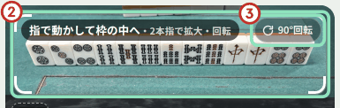
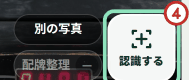
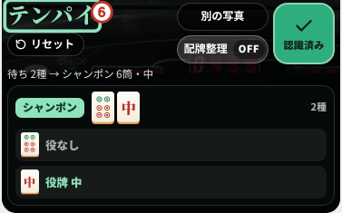
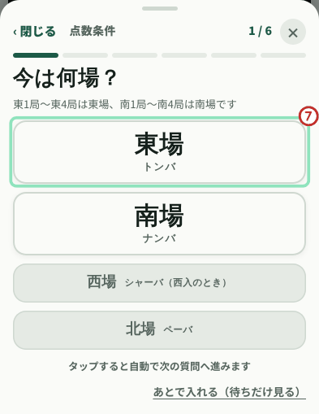
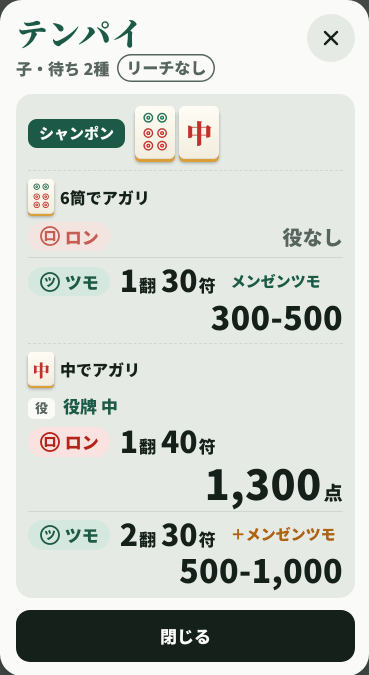
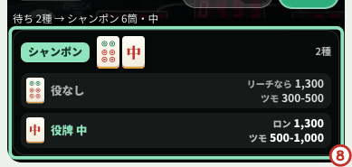
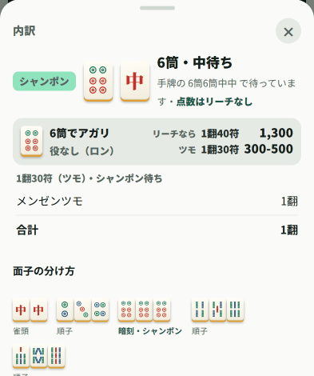

使い方
手牌を写真に撮るだけで、シャンテン数・待ち牌・点数が出ます。写真は端末の外に送られません。
写真から読み取る（7ステップ）
1アルバムから写真を選ぶ
上のタブで「写真」を選ぶと、アルバムが開きます。手牌が横一列に写っている写真を選んでください。
「カメラ」で撮るときは、読み取り枠が画面の上（スマホの裏のカメラに近い所）にあるので、スマホを高く構えなくても手牌を枠に入れられます。もっと近くから撮りたいときは、スマホを横にすると、カメラだけの画面になって手牌の列が大きく写ります（右端の大きな「認識する」で撮ります）。iPhone で横にしても画面が変わらないときは、コントロールセンターの「画面縦向きのロック」をオフにしてください。読み取ったら、スマホを縦に戻すと待ち・点数が見られます。
2手牌を枠の中に入れる
写真を指でドラッグして動かし、2本指で広げると、指の間の所を中心に拡大できます。手牌の列が枠いっぱいに入るように合わせてください。手牌が斜めに写っているとき（テレビ中継の画面など）は、2本指で回して手牌を枠と平行にします（枠の左上の「戻す」で0°に戻ります）。

牌が小さく写っていると読み間違えます。手牌が枠の横幅いっぱいになるくらいが目安です。
3「認識する」を押す
1〜2秒で読み取りが終わります。通信はしません。機内モードでも動きます。

4読み取りを確かめる
読み取った牌が枠のすぐ下に並ぶので、写真と見比べられます。違う牌があればその牌をタップすると選び直せます。読み取れなかった牌は「？」になります。全部やり直したいときは、牌の下の「リセット」で牌を消してから、もう一度「認識する」を押します（写真はそのまま残ります。カメラのときは映像が動き出すので、そのまま撮り直せます）。
5待ちを形で見る
13枚そろうと、読み取った牌の下にテンパイかどうかが出て、その下に待ちが形ごと（両面・シャンポン・単騎・三面張…）に並びます。牌ごとにつく役も書いてあります。ここまでは条件なしで見られます。

テンパイでないときは「1シャンテン」「2シャンテン」のように、あと何回の入れ替えが要るかが出ます。1シャンテンなら、テンパイになる牌が役がつく牌・役なしの牌に分かれて並び、押すといちばん高い切り方が出ます。
6点数条件を1問ずつ答える
1シャンテン・テンパイ・アガリ形になると、画面の下から「点数条件」が出ます。1画面に1問ずつ、押すと自動で次の質問へ進みます（今は何場？ → あなたの自風は？ → 本場と供託 → ドラ表示牌 → リーチ…）。ドラ表示牌の枚数は最初から1枚になっているので、表示牌を押すだけで次へ進みます（カンがあれば枚数を増やします）。アガリ形では、続けて 一発 → ロン/ツモ → 特別な役 → 裏ドラ を聞きます。鳴いていたらリーチは聞かないなど、要らない質問は飛ばします。1シャンテンのときは、先に「アガリ想定に進みますか？」と聞くので、待ちだけ見たいときは「不要」を押してください。

すぐ待ちだけ見たいときは「あとで入れる」で閉じられます。点数条件は局ごとに聞き直します（前の局の答えは引き継ぎません）。人数や符などの卓のルールは、「点数条件」の枠の「ルール設定」で一度だけ合わせます。
7点数が出る
「この条件で点数を見る」を押すと、まず待ち・役・ロン／ツモ・翻・符・点数だけを大きく重ねて出します。卓の上でも一目で読める大きさです。右上の ✖（または下の「閉じる」）で元の画面に戻ります。もう一度大きく見たいときは、カードの下の「点数を大きく表示」から。
ロンとツモには絵が付きます。ロンは「的の真ん中に牌」（他の人の捨て牌が当たり牌）、ツモは「山から牌を引き上げる」（自分で引く）。色もロンは赤、ツモは緑です。
本場や供託があるときは、大きな点数（基本の点数）の下に、本場・供託を入れた点数を少し小さく出します。たとえば2本場・供託2本で子のツモ 1,300-2,600 なら「1,500-2,800(2本場)+2,000(供託2)」、親のツモなら「2,800オール(2本場)+2,000(供託2)」です。リーチしたテンパイの点数は裏ドラ・一発を含みません（大きな表示に注記が出ます。アガリ形では裏ドラ・一発も聞いて計算します）。

元の画面では、待ちの形ごとに、牌ごとの役とロン・ツモ両方の点数と翻数が出ます。リーチに「しない」と答えたときは、点数の上に「リーチなし」と出ます。同じ形の中で牌によって役が増えるときは、増える役に色が付くので、どれでアガるのが得かを見比べられます。ツモは支払いの形で、子なら「2,000-4,000」、親なら「4,000オール」のように出ます。アガリ形（14枚）のときは、アガリ牌・役・点数・受け取りをまとめたカードが手牌の下に出ます。

形を押すと、下から内訳が出ます。

ホーム画面に置いて使う
ブラウザで開くよりも、ホーム画面に置いたほうが速くて便利です。一度置いておけば、電波が届かない場所でも使えます。
スマホのブラウザで写真を読み取ると、画面の下に「ホーム画面に追加しませんか」の案内が出ます。「追加のしかた」を押すと、お使いのスマホに合わせた手順が出ます（× で閉じると、もう出ません）。
iPhone（Safari）
- Safari でこのサイトを開く
- アドレスバーの右の「…」を押して、「共有」を選ぶ
- 下にずらして「ホーム画面に追加」を選ぶ
- 「Webアプリとして開く」はオンのまま、右上の「追加」を押す
iOS 18 までの Safari や、iPhone の Chrome などは、共有ボタン（□に↑）から「ホーム画面に追加」を選びます。
Android（Chrome）
画面の下の案内の「追加のしかた」→「ホーム画面に追加」を押すか、Chrome の右上の「︙」→「ホーム画面に追加」（または「アプリをインストール」）を選びます。
LINE から開いたとき
LINE のトークのリンクから開くと、LINE の中のブラウザで表示され、そこからは追加できません。メニュー（︙ や共有）の「Safariで開く」（Android は「他のアプリで開く」）で開き直してから追加してください。このアプリの共有ボタンから送ったリンクは、LINE でも Safari・Chrome で開きます。
アイコンから開くと、ブラウザのバーが消えて全画面になります。
友だちに教える
画面の上の共有ボタン（「？」の左）を押すと、下から「友だちに教える」が出ます。
- LINE などで送る … スマホの共有メニュー（LINE・メッセージ・AirDrop など）で、このアプリのアドレスを送ります。
- QRコードを見せる … 卓を囲んでいる人に、その場でカメラ（LINE でも）で読み取ってもらえます。
- リンクをコピー … アドレスをコピーします。
送るのはこのアプリのアドレスだけです。写真や手牌は送りません。いちばん下からは、姉妹アプリ「麻雀記録帳」（成績の記録）も開けます。
うまく読み取れないとき
| 症状 | 試すこと |
|---|---|
| 枚数が合わない | 「リセット」を押してから、手牌の列が枠いっぱいに入るまで拡大して、もう一度「認識する」を押してください。牌が小さいと区切りを間違えます。 |
| 牌を読み違える | その牌をタップして選び直してください。候補が3つ出ます。 |
| 「手牌が見つかりません」と出る | 手牌が横一列に並んで写っているか確認してください。斜めから撮った写真や、牌が重なっている写真は読めません。 |
| 暗くてうまくいかない | 手元の影が牌にかからないように撮り直すと読みやすくなります。 |
| 縦向きの写真 | 枠の右上の「90°回転」で横向きにしてください。 |
| 手牌が斜めに写っている | 2本指で写真を回して、手牌を枠と平行にしてください（パソコンは Shift を押しながらホイール）。斜め上から強い角度で写した画面は、枚数を読み違えることがあります。 |
| カメラで手牌が枠に入らない | スマホを横にすると、近くから撮れます（カメラだけの画面になります）。iPhone で画面が横にならないときは「画面縦向きのロック」をオフにしてください。 |
撮り方のコツ（角度・光・赤5の見分け方など）は、きれいに読み取るコツにまとめています。
三人麻雀で使う
見出しの横の「三人麻雀」を押すと切り替わります。2〜8萬と赤5萬は使えない牌として扱い、チーも入力できなくなります。抜きドラ（北）の枚数も入れられます。
三人麻雀の設定のまま2〜8萬を読み取ると、設定の間違いをお知らせします。四人麻雀との違い（ツモ損・抜きドラなど）は三人麻雀のルールをどうぞ。
鳴いているとき
手牌が10枚・7枚・4枚で読み取れたときは、鳴きの入力に案内します。チー・ポン・明カン・アンカンを選んで、鳴いた牌をタップしてください。2組以上鳴いているときは、枚数が合うまで「鳴き 2組目」「3組目」と続けて聞きます。鳴きを入れないと待ちは出ますが、点数は出せません。
写真はどこにも送られません
読み取りはすべて端末の中で行います。写真も手牌も、外部のサーバーに送られることはありません。通信していないので、電波が悪い雀荘でも同じ速さで動きます。くわしくはプライバシーポリシーをご覧ください。
アプリを開く